Spring 2027
Software Developer Co-op (incoming)
IBM, Lowell, MA
I study how children and vision models learn to see, and build tools students use.
I'm a Math-CS major and Cognitive Science minor at UC San Diego, building full-stack tools, applied ML projects, and multi-agent systems (see projects). I also do research in DevPsych / CompCogSci studying how children learn.
Outside of class and code, I perform with LionDanceME, paddle Dragonboat/OC1, play various racket sports, and shoot photo/video for fun!
Open to Summer 2027 positions in:
University of California San Diego
B.S. Mathematics-Computer Science
Minor in Cognitive Science
City College of San Francisco
A.S. Mathematics, Highest Honors
Spring 2027
IBM, Lowell, MA
Jun 2026 - Sep 2026
Essenergy Inc., Milpitas, CA
Jun 2026 - Sep 2026
IDX Exchange, Remote
I am broadly interested in how humans and models learn and abstract concepts, and how we can use this to improve our understanding of both human and artificial intelligence.
Visual Learning Lab, Department of Psychology, UC San Diego
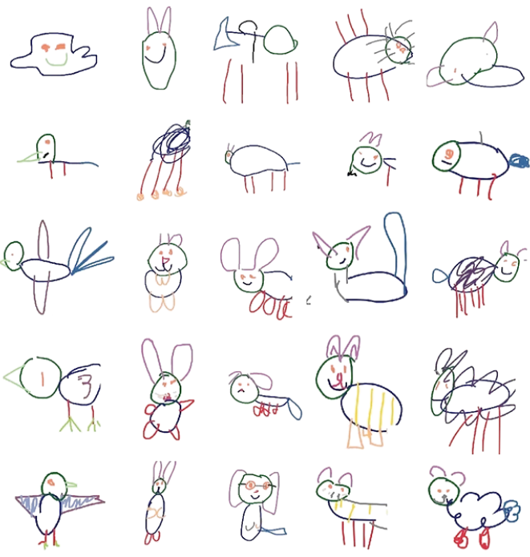
Conducting a study testing whether line-drawing embeddings preserve the geometry of photo embeddings, and how training objective and data affect it.
Presented to faculty and students at the end-of-session symposium of the Transfer Research Experience Program, UC San Diego Department of Mathematics.
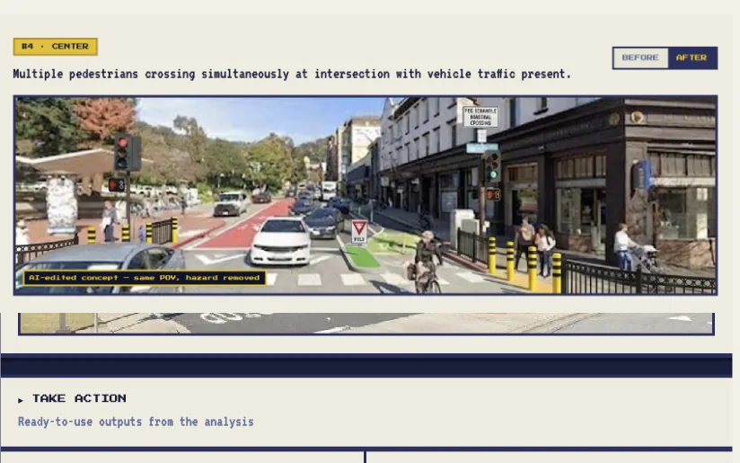
Best Use of Claude, UC Berkeley AI Hackathon 2026
A multi-agent system that turns street imagery and public records into ready-to-send city council letters. Won among 200+ projects and 1,000+ hackers with a team of 4.
Co-built a two-stage vision pipeline: Claude assesses 1 satellite and 4 Street View images blind to community reports, then a separate pass corroborates each hazard against crash, 311, and news records.
Claude Vision, Fetch.ai uAgents, Browserbase, Redis, Mapbox
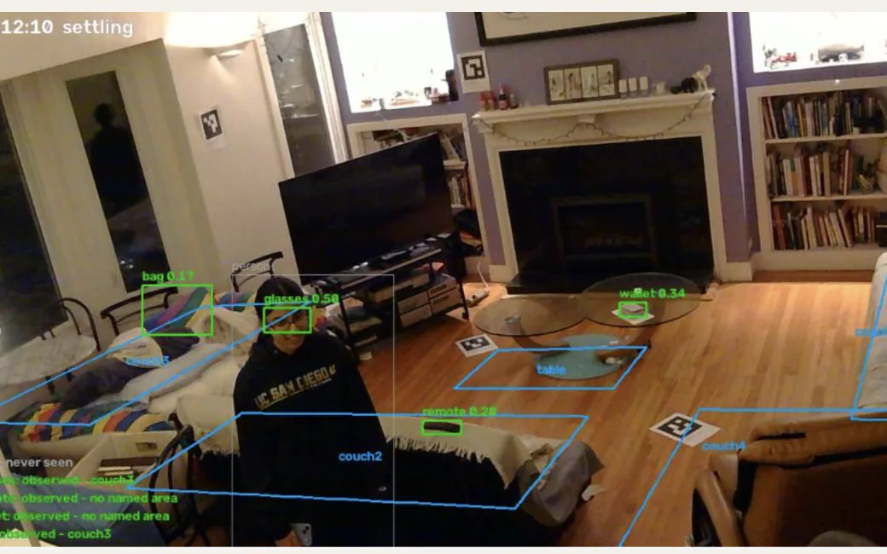
Cal Hacks 13.0
A real-time assistive system for people with dementia that tracks objects in a room from one webcam, using open-vocabulary detection and a temporal state model that infers occluded objects' locations. I led vision and state inference.
Recovers 3D positions by ray-casting detections onto a LiDAR room scan, and drives a Bluetooth LE wearable that points toward the object. Includes on-device Whisper STT and a grounded Claude agent for caregiver questions, with 270+ tests.
YOLO-World, Whisper, Claude, C++, Arduino
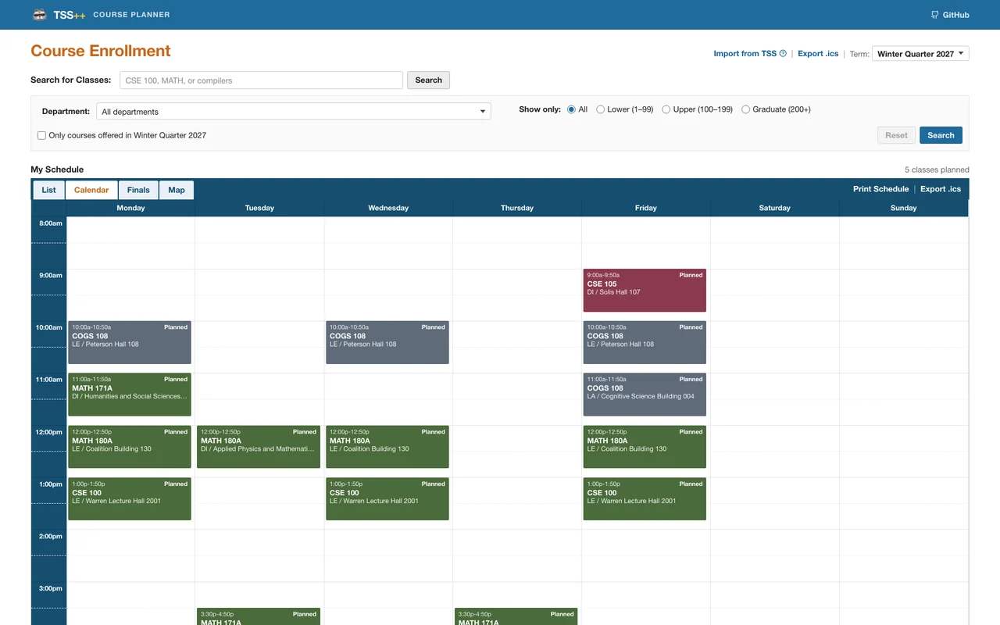
Open source, 1,000+ users
An open-source course planner built as an alternative to UCSD's new student system, with prerequisite graphs, conflict detection, campus walking routes, and .ics export.
Reverse-engineered the undocumented TSS OData API from network traffic to scrape each quarter's sections, and built transitive prerequisite trees with AND/OR groups and cycle detection across 5,700+ courses. A daily GitHub Actions workflow detects newly published quarters and scrapes them automatically.
React, TypeScript, FastAPI, MongoDB, GitHub Actions
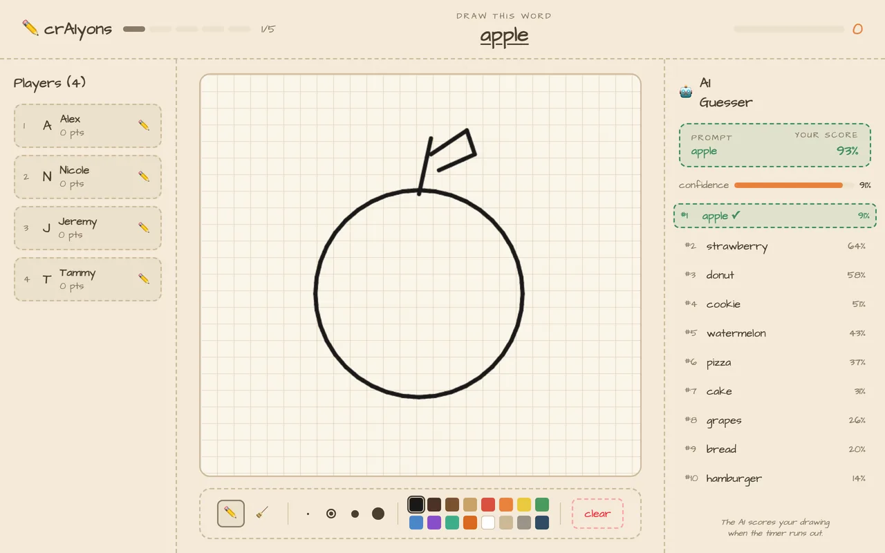
Multiplayer drawing game scored by computer vision. Trained 4 category-specific CNNs over 60 QuickDraw classes for live in-game scoring, and replaced softmax scoring with class-centroid cosine similarity, raising one model's similarity score from 0.56 to 0.63.
PyTorch, WebSockets
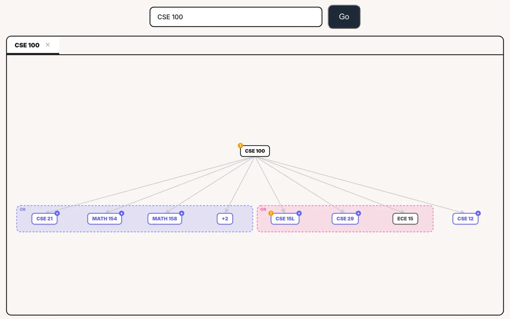
Engineered scraping pipelines to collect and transform 2,500+ courses into a structured SQL database with AST-backed representations. Designed a TypeScript prerequisite resolver parsing nested AND/OR logic and rendering dependency DAGs in D3.js, with a CI/CD pipeline that republishes new courses each quarter.
Python, Go, React, TypeScript, D3.js
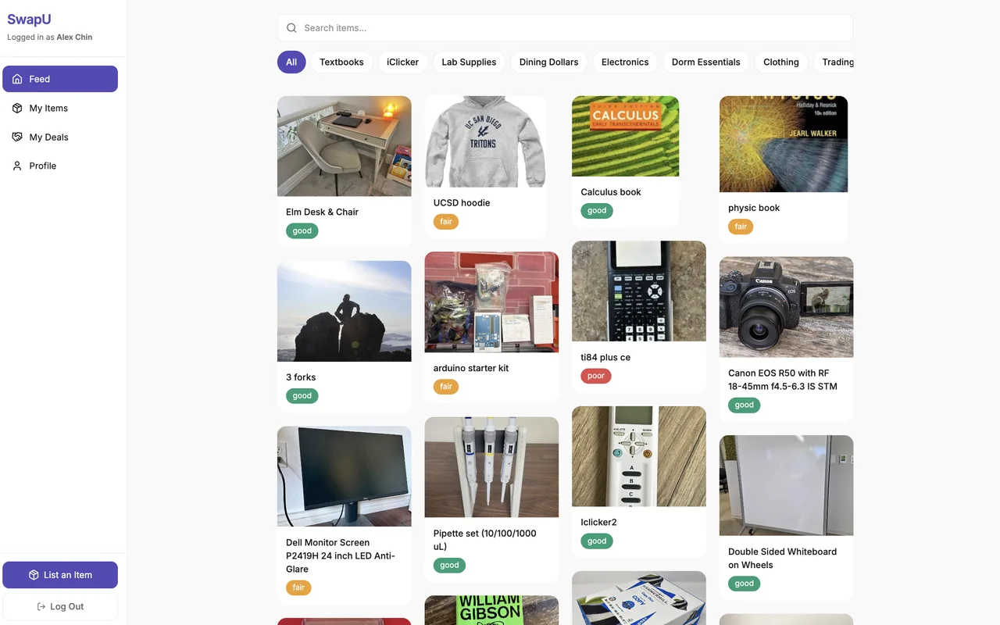
Student item-swap marketplace where Fetch.ai agents negotiate multi-item trades. Built the FastAPI backend (REST, WebSockets, Supabase PostgreSQL, S3, auth), integrated BrowserUse agents for real-time market prices and confidence scores, and validated the negotiation flow against 128 mock listings.
FastAPI, Supabase, WebSockets, Fetch.ai, BrowserUse
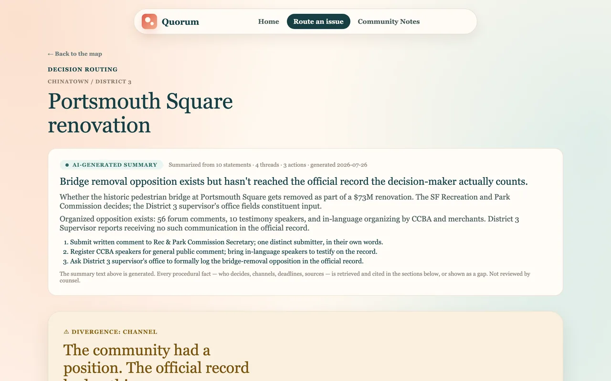
Civic advocacy generator that turns a community's position on a local issue into a tactical organizing kit: plain-language briefs, procedural playbooks with source-backed facts, three recourse paths, precedent-based strategy, and a bilingual outreach packet.
Jac/jaclang, Python, LLM integration, Firecrawl, Apify
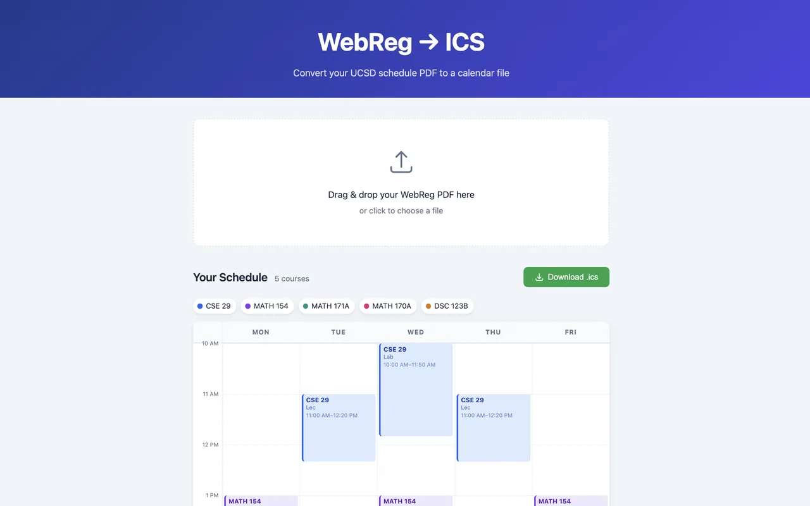
Converts UCSD WebReg schedule PDFs into importable .ics calendar files, with a weekly schedule preview before download. Parses course data from the PDF, generates recurring lectures, skips UCSD holidays, and adds midterms and finals as one-off events.
Python, FastAPI, PyMuPDF, JavaScript, iCalendar
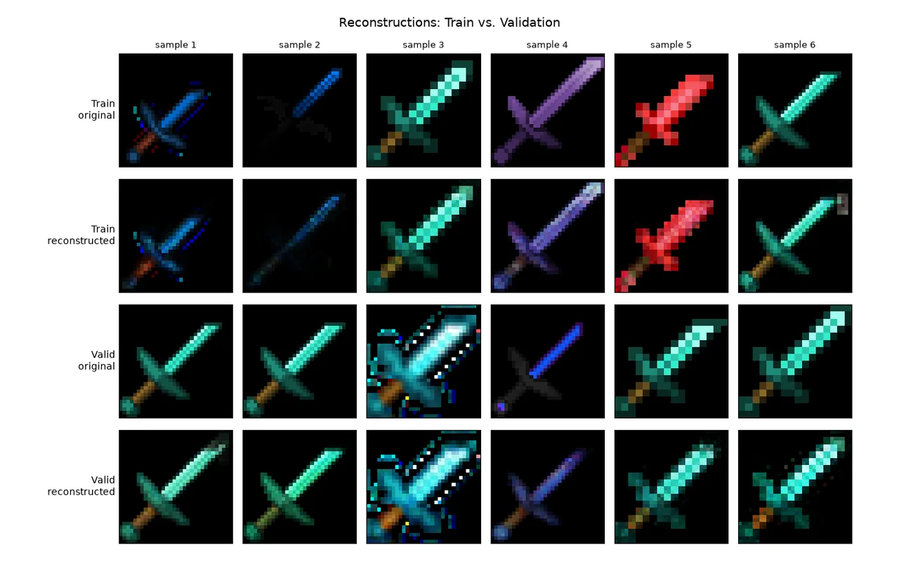
From-scratch walk through the history of image generation in PyTorch on Minecraft item textures. Roadmap: VAEs, VQ-VAE, VQGAN, flow matching, RAEs, and latent diffusion.
PyTorch, VAE, VQ-VAE, VQGAN, DDPM, latent diffusion, flow matching, RAE
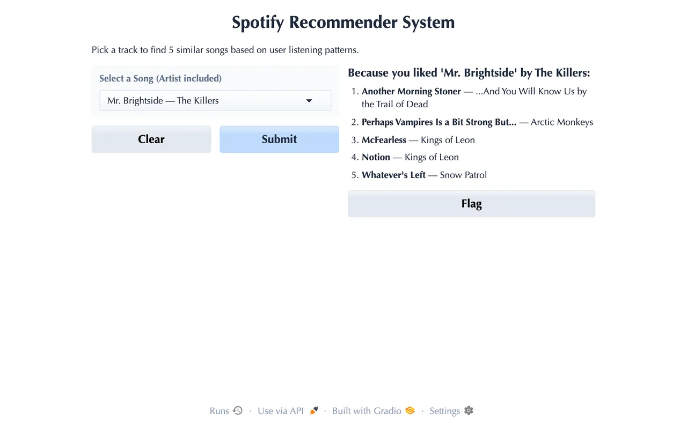
Two-tower neural collaborative filtering model mapping user preferences and 900,000+ tracks into a shared latent space. Tuned embedding size and epochs, achieving 0.84 ROC-AUC and a 30% reduction in validation loss.
Python, PyTorch, pandas, NumPy
Vehicle routing optimizer for LionDanceME operations, modeling multi-stop routing as a constrained Traveling Salesman Problem using OpenStreetMap road networks. OR-Tools enforces time-window and overlap constraints across 40+ daily events.
Google Maps API, Python, H3, pandas, React